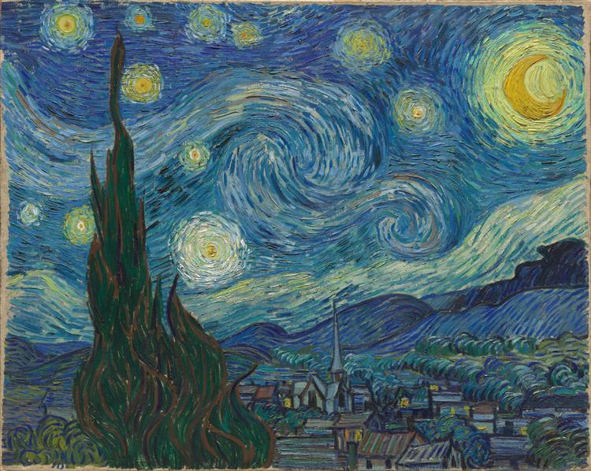

Noite Estrelada
Artista: Van Gogh
Ano: 1889
Descrição: Uma das obras mais famosas de Van Gogh, retrata o céu noturno cheio de movimento, com redemoinhos e estrelas cintilantes sobre uma pequena vila. A pintura transmite intensidade emocional e espiritualidade. Obra pósimpressionista.